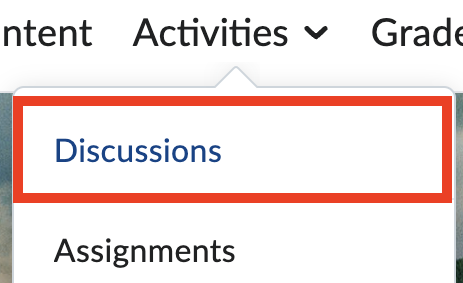
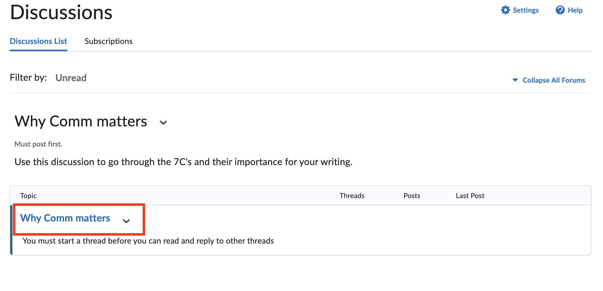
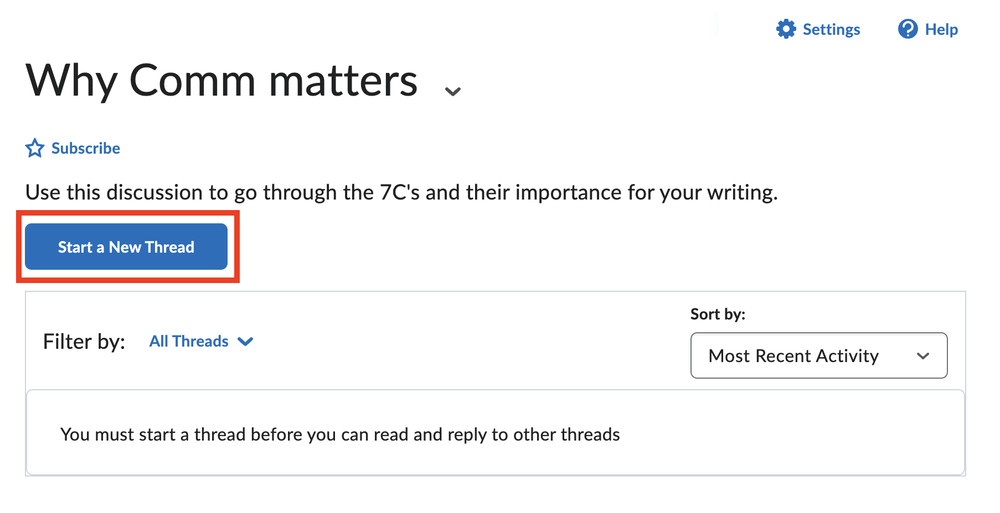
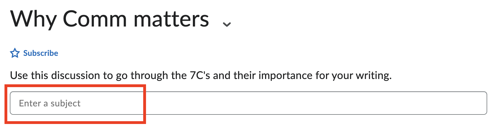
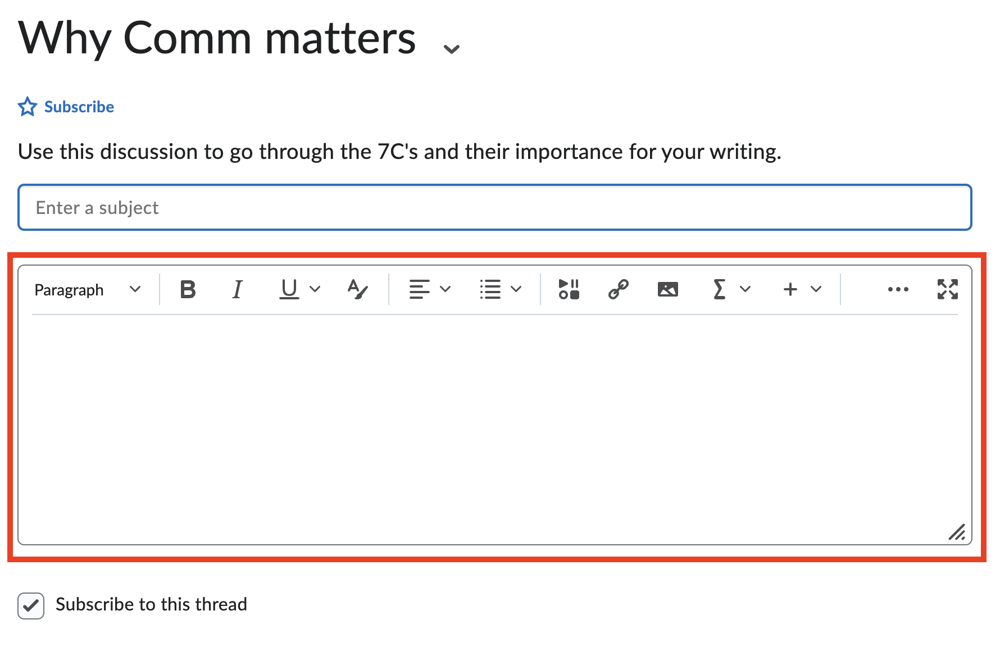
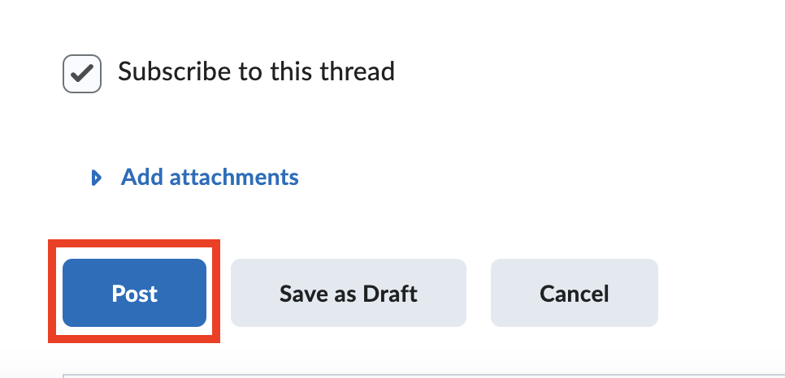
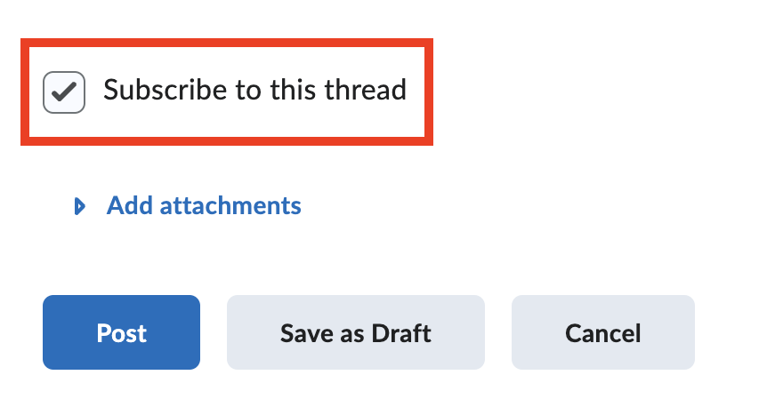

How To Create a Discussion Thread
Some classes may require you to create a discussion post about course materials. Discussion threads can also be used to ask questions to the class.
Creating a discussion thread
-
From the landing page, Click on the course you will be creating a discussion thread for.
-
On the top navbar, Click Activities to open a drop-down menu.
-
Click Discussions to get to the Discussions List for the course. 
-
Click on the topic where you want to write to in the Discussion List.

-
Click the Start a New Thread button.

-
Write a subject line to describe what your discussion thread will be about

-
Write your discussion post by typing in the text box.

-
Click Post.

Info
If you do not want to receive notifications about this thread, you can Un-select "Subscribe to this thread" before clicking post. By default, this check box is selected.
Tip
You can also save your discussion post by clicking Save as Draft, so you can view and edit it at a later time before posting it.
Success
You have successfully created a discussion thread for your course!
Conclusion
By the end of this section, will have successfully learned:
- How to create a discussion thread
- How to unsubscribe to notifications for the discussion thread
- How to save a discussion thread as a draft